Kibana Guide: Arrange and Connect a Dashboard
|
This content was generated with the assistance of AI and should be verified against the official documentation before being relied on in production. |
Checked on 2026-11-11 against Kibana 9.5.x.
What you build
You take the dashboard Bookshelf (guides) from a pile of panels to a dashboard that someone else can read and use. You resize and move the panels, put the two charts in a collapsible section called Requests, add three controls (an options list for the log severity, a range slider for the HTTP status and a time slider), a Markdown panel that says what the dashboard is and a Links panel with two links. Then you connect the bar chart to a copy of the dashboard with a dashboard drilldown and to the lab’s webhook receiver with a URL drilldown, and you give the chart a title and a description in the panel settings.
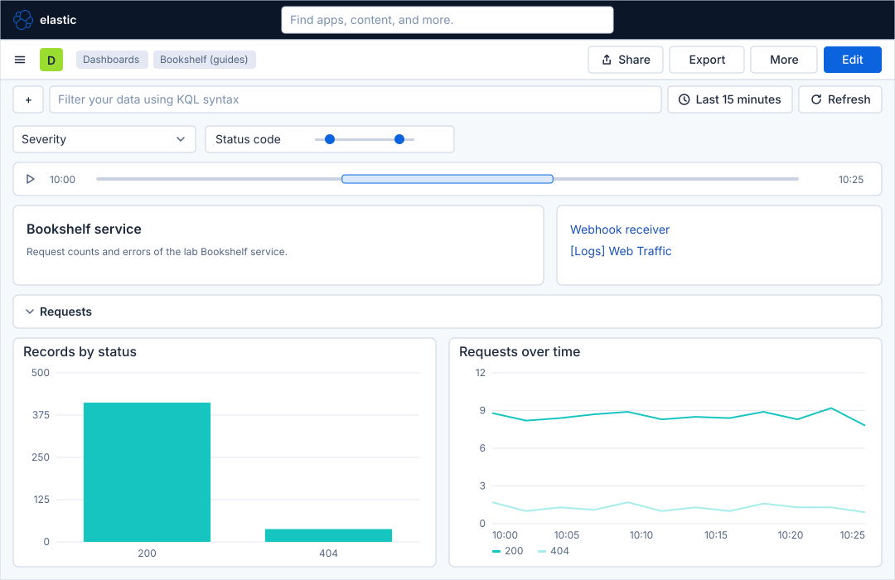
Before you start
-
Start the Kibana profile of the hands-on lab and wait about a minute:
cd lab docker compose --profile kibana up -d -
Open http://localhost:5601 and sign in as
elasticwith the passwordlab-elastic-password. When Kibana opens its full-screen welcome page, click Explore on my own. -
Do the previous guide, Maps, and the guides before it, which create the dashboard Bookshelf (guides) and fill it with panels. This guide needs the dashboard with at least the bar chart Records by status and a line chart; the names in the steps are the ones the earlier guides give. It also needs the data view Bookshelf logs (guides) (index pattern
logs-generic.otel-default, time field@timestamp) and, for the link in step 24, the sample dashboard [Logs] Web Traffic from the guide First steps in Kibana. -
The load generator sends traffic to the Bookshelf service in its default mode. Controls, sections, Markdown, Links and drilldowns need no licence beyond the basic one; the lab runs a trial licence anyway.
-
The guide was checked on Elasticsearch and Kibana 9.5.6. The figures are drawings of the Kibana 9.5 user interface, not screenshots, so small details can differ from your screen. The Add to dashboard flyout, the More menu and the second bar were read in the lab; the flyouts of the controls, the Markdown panel, the Links panel, the drilldowns and the panel settings are drawn from the Elastic documentation, so look for a control by its name when it is not where a figure shows it. A highlighted box with a number marks the control of the step with the same number.
Steps
The screen maps of a dashboard in edit mode and of the Lens editor are in the guide Create a dashboard and the first Lens panel; come back to them when a control is not where a figure shows it. This guide stays on the dashboard in edit mode and opens its flyouts one after the other.
Arrange the panels
-
Click the menu button (Toggle primary navigation) at the left of the second bar. Under Analytics, click Dashboards, then click Bookshelf (guides).
-
Click Edit.
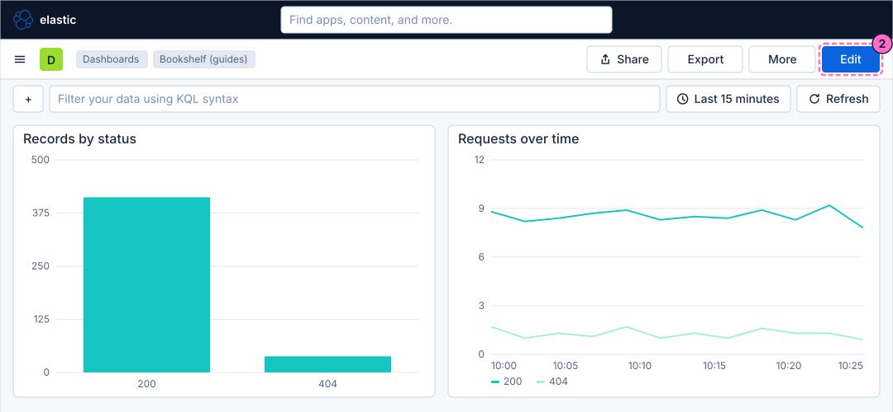
-
Point at the bottom right corner of the bar chart panel and drag it to make the panel a little smaller or larger. The panel snaps to the dashboard grid of 48 columns.
-
Drag the line chart panel by the move control in its header, which is the icon with three lines at the right of the header, to another place, for example below the bar chart, and drop it. The other panels make room.
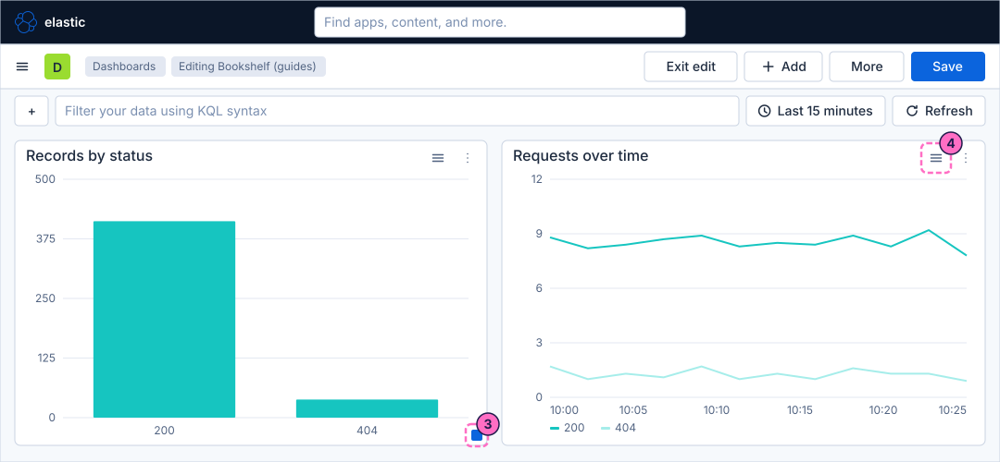
Group the charts in a collapsible section
-
Click Add in the second bar. The flyout Add to dashboard opens on its tab New.
-
Scroll to the group Annotations and Navigation and click Collapsible section.
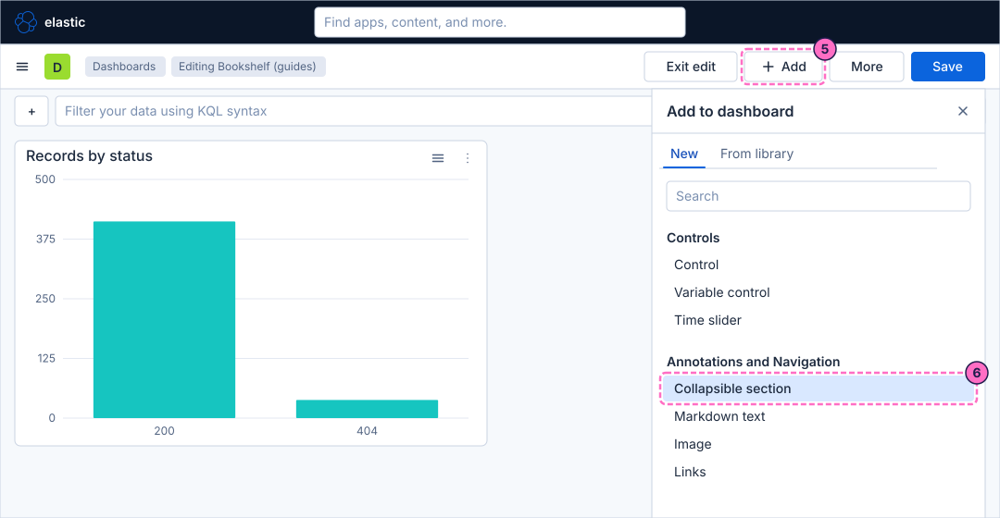
-
A new section appears at the top of the dashboard with a default title. Click its title, type
Requestsand confirm with the Enter key. -
Drag each of the two chart panels by its move control into the section, below the section title. A section has to be expanded to receive panels. Click the arrow at the left of the section title once to collapse the section and again to expand it: the state is saved with the dashboard.
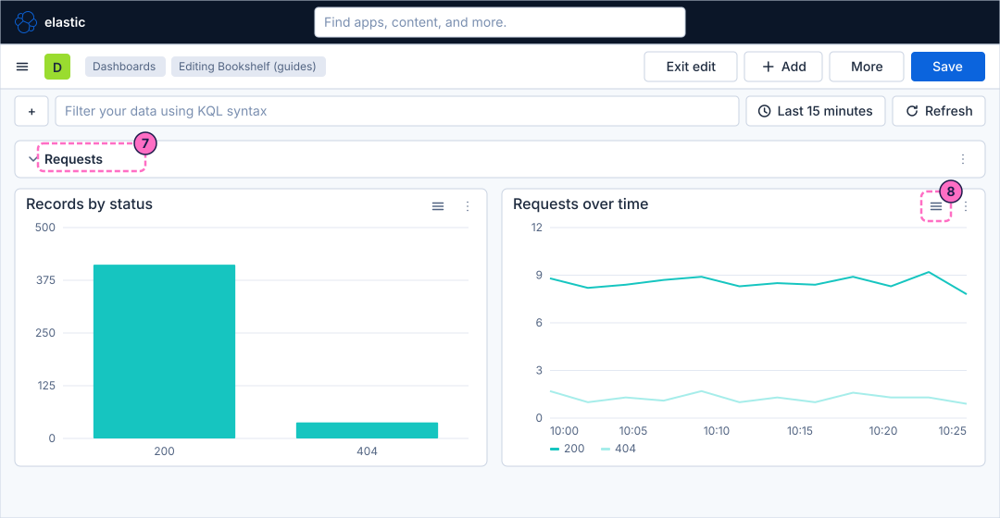
Add controls
-
Click Add in the second bar.
-
Under Controls, click Control.
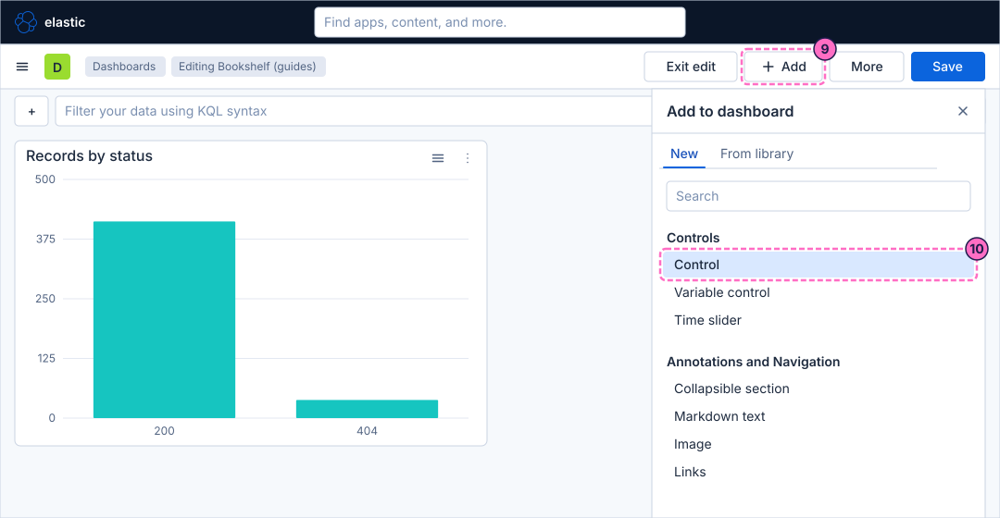
-
In the control flyout, check that the data view is Bookshelf logs (guides) and select the field
severity_text. -
As the control type, select Options list.
-
In the label, type
Severity. -
Save the control with the Save button of the flyout. The control appears above the panels.
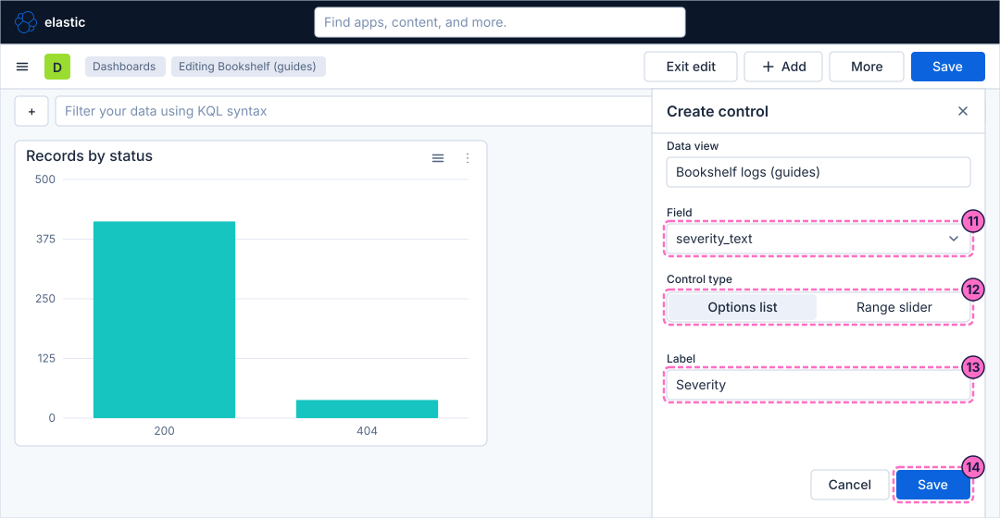
-
Add a second control the same way, with the steps 9 to 14: select the field
attributes.status, the control type Range slider (the field is a number) and the labelStatus code. -
Click Add again and, under Controls, click Time slider. The time slider appears at the top of the dashboard. It needs a data view with a time field, and a dashboard has at most one.
-
Open the control Severity and select
ERROR. The panels that use the fieldseverity_textshow only the error log records; with normal traffic they can be nearly empty, so start the failure mode of the load generator first (see Check the result). Clear the selection afterwards. -
Drag the selected window of the time slider, or one of its ends, to another part of the time range. The time-based panels follow it.
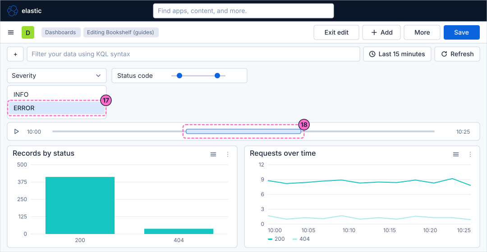
Add a Markdown panel and a Links panel
-
Click Add and, under Annotations and Navigation, click Markdown text.
-
In the editor of the panel, type this text:
## Bookshelf service Request counts and errors of the lab Bookshelf service. -
Confirm the editor with its saving button (Save in the figure). The panel appears on the dashboard; drag it to the top row as in the finished dashboard.
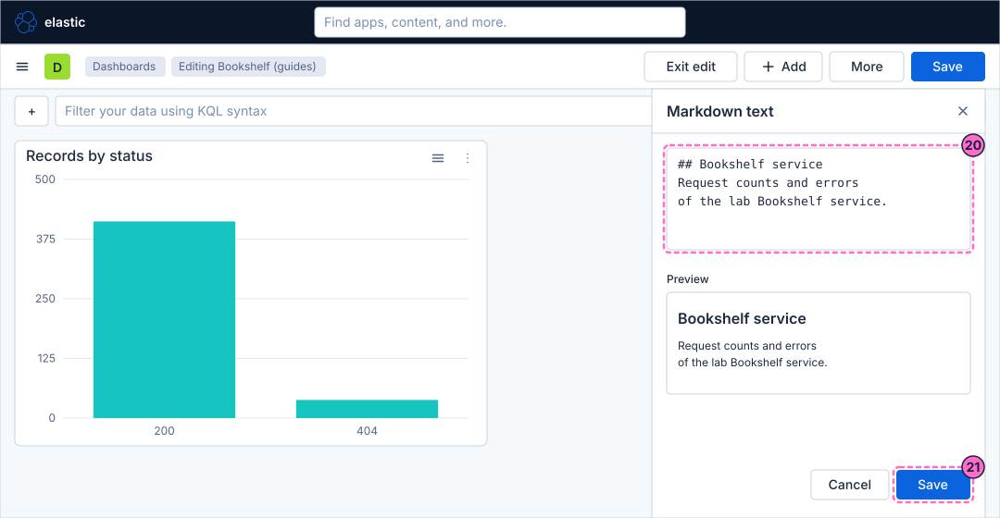
-
Click Add and, under Annotations and Navigation, click Links.
-
Add an external link: its label is
Webhook receiverand its URL ishttp://localhost:8081. -
Add a dashboard link to the dashboard [Logs] Web Traffic.
-
Confirm the editor with its saving button.
Connect the bar chart with drilldowns
A dashboard drilldown needs a destination dashboard, so the steps first make a copy of the dashboard.
-
Click Save in the second bar. If a dialog opens, confirm it.
-
Click Exit edit.
-
Click More in the second bar.
-
In the menu, click Duplicate.
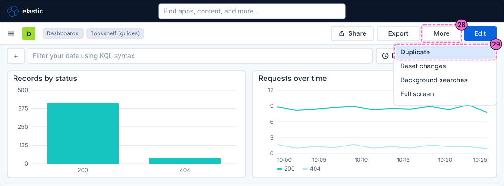
-
In the dialog, type
Bookshelf details (guides)as the title and confirm it. Kibana opens the copy. -
Open the dashboard Bookshelf (guides) again from Dashboards, as in step 1.
-
Click Edit.
-
Open the menu of the bar chart panel: the icon with three dots at the right of its header.
-
Click Create drilldown.
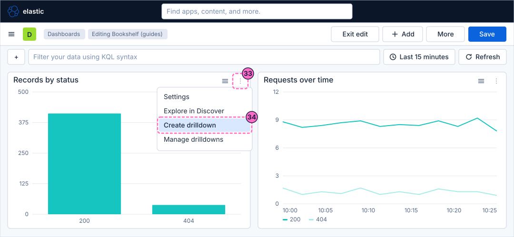
-
In the flyout, select the action Go to dashboard.
-
In Name, type
Details by status. -
In Choose destination dashboard, select Bookshelf details (guides).
-
Tick Use filters and query from origin dashboard and Use date range from origin dashboard, so that the destination receives the controls, the query and the time range of this dashboard.
-
Click Create drilldown.
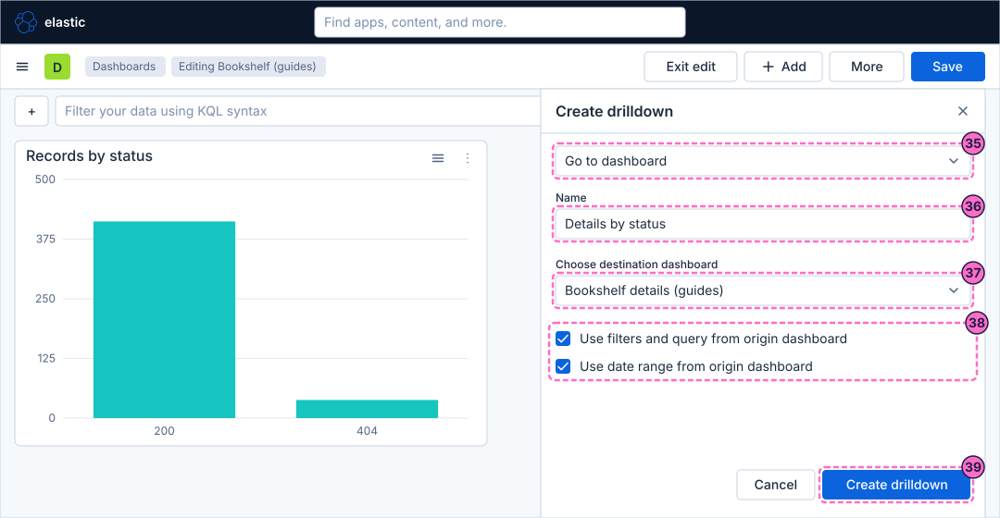
-
Open the panel menu again and click Create drilldown to add a second drilldown to the same panel.
-
Select the action Go to URL.
-
In Name, type
Webhook receiver. -
Enter this URL template, which contains the variable
{{event.value}}that Kibana replaces with the value you click, here the HTTP status:http://localhost:8081/?status={{event.value}} -
Click Create drilldown. Leave Open URL in new tab and Encode URL on.
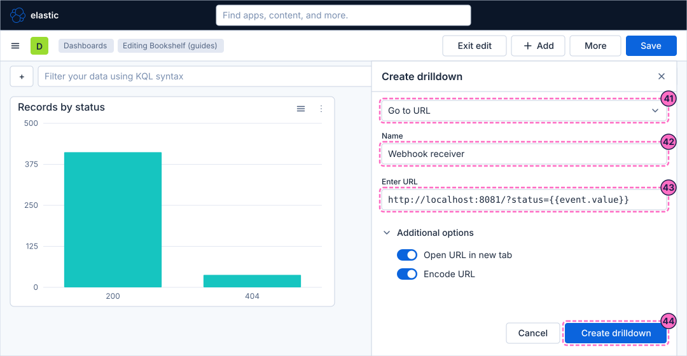
Set the panel settings and save
-
Open the menu of the bar chart panel again and click Settings.
-
In the title, type
Records by status. -
In the description, type
Log records per HTTP status. -
Apply the settings with the confirming button of the flyout (Apply in the figure).
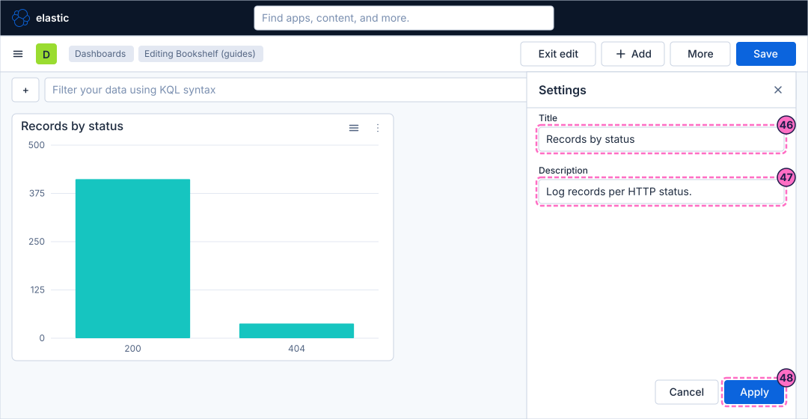
-
Click Save in the second bar and confirm the dialog if it opens.
-
Click Exit edit.
Check the result
Open Dashboards and then Bookshelf (guides). The dashboard must open with the three controls on top, the Markdown panel and the Links panel, and the section Requests with the two charts.
-
Start the failure mode, wait a minute, press Refresh and select
ERRORin Severity; the bar chart then shows the error status values:curl -X POST localhost:8090/mode/failing -
Click a bar of the chart. A menu lists the two drilldowns Details by status and Webhook receiver. The first opens Bookshelf details (guides) with the clicked status as a filter and the same time range; the second opens
http://localhost:8081/?status=followed by the clicked value in a new tab, where the webhook receiver answers with the deliveries it holds as JSON (an empty list until a webhook was sent). -
Collapse the section Requests, save the dashboard and reload it: it keeps the state it was saved with.
Restore normal traffic afterwards:
curl -X POST localhost:8090/mode/normalVariations
-
Drag a control out of the pinned bar into the body of the dashboard (an unpinned control) or into the section, so that it filters only the panels of that section; the controls page explains pinned and unpinned scope.
-
Add a Discover drilldown instead of the URL drilldown to open the documents behind a bar in Discover.
-
Use
{{event.value}}and the other variables of the URL template to build a link to a runbook or a ticket search.
What can go wrong
| Symptom | Cause | Fix |
|---|---|---|
The Severity list is empty |
The time range holds no log records, or the field |
Widen the time picker, check the load generator with |
A chart does not react to a control |
The panel uses a data view that does not have the field of the control. |
Use controls on fields that the data view of the panel has; an ES|QL panel needs a variable control instead. |
The drilldown menu does not appear when you click a bar |
The dashboard is still in edit mode, or the drilldown was not saved with the dashboard. |
Save the dashboard, leave edit mode and click the bar again, or use Manage drilldowns in the panel menu. |
The destination dashboard shows no data after the drilldown |
The time range or the filter of the origin was not carried over. |
Edit the drilldown and tick Use filters and query from origin dashboard and Use date range from origin dashboard. |
The URL drilldown opens a page with the literal text of the variable |
The variable was typed with a different name or with single braces. |
Use exactly the name |
A panel cannot be dropped into the section |
The section is collapsed. |
Expand the section first, then drag the panel. |
Clean up
Keep the dashboard Bookshelf (guides): the following guides use it. The copy Bookshelf details (guides) is only the destination of the drilldown; delete it from Dashboards when you no longer need it, and remove the drilldown with Manage drilldowns first, or it points to nothing.
Where to go next
-
Previous guide: Maps.
-
Next guide: Share, export and move dashboards, which sends this dashboard to other people and other spaces.
-
Reference: Building Dashboards covers the grid, sections and panel options, and Controls & Drilldowns covers the control types, pinned scope, chaining and the three drilldown kinds.